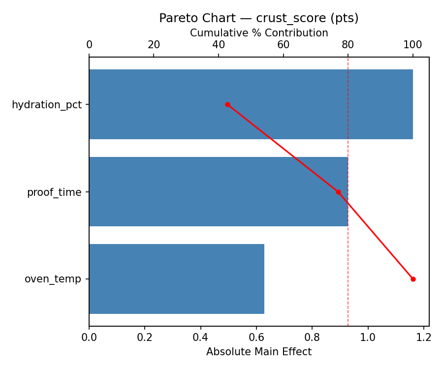
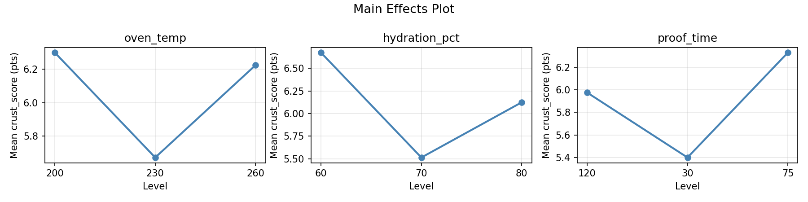
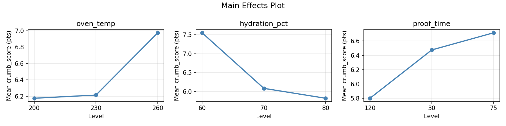
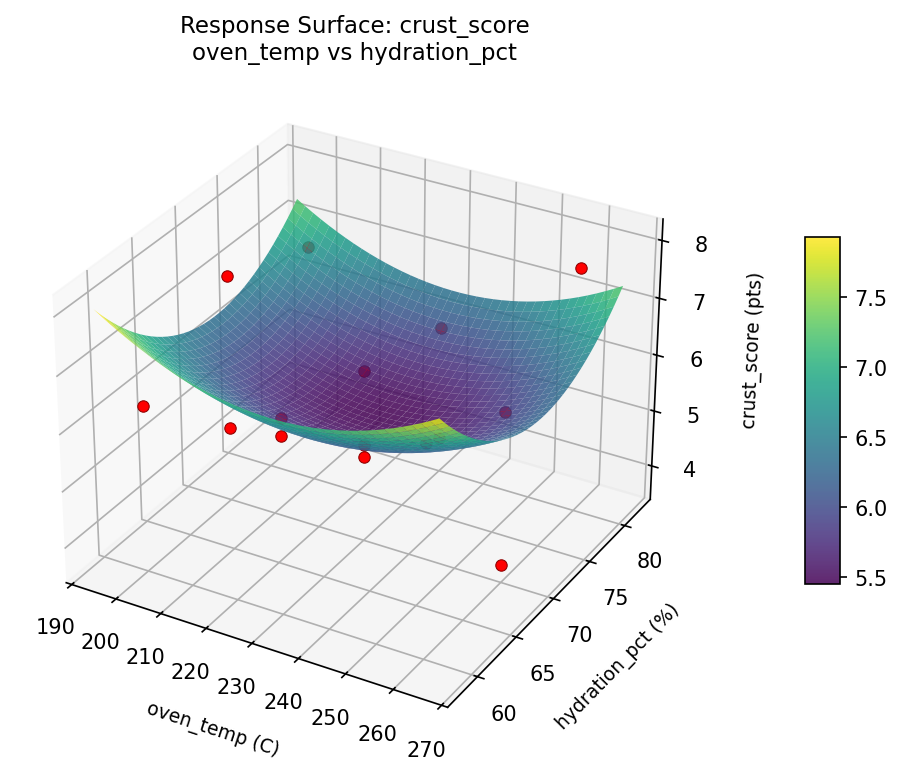
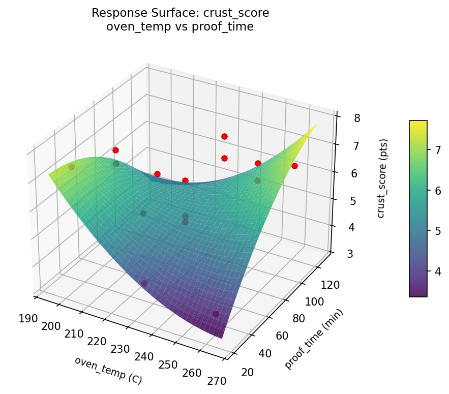

Summary
This experiment investigates bread baking optimization. Box-Behnken design to optimize crust color, crumb texture, and rise height by tuning oven temperature, hydration, and proofing time.
The design varies 3 factors: oven temp (C), ranging from 200 to 260, hydration pct (%), ranging from 60 to 80, and proof time (min), ranging from 30 to 120. The goal is to optimize 2 responses: crust score (pts) (maximize) and crumb score (pts) (maximize). Fixed conditions held constant across all runs include flour type = bread_flour, salt pct = 2.
A Box-Behnken design was chosen because it efficiently fits quadratic models with 3 continuous factors while avoiding extreme corner combinations — requiring only 15 runs instead of the 8 needed for a full factorial at two levels.
Quadratic response surface models were fitted to capture potential curvature and factor interactions. The RSM contour plots below visualize how pairs of factors jointly affect each response.
Key Findings
For crust score, the most influential factors were hydration pct (42.7%), proof time (34.2%), oven temp (23.1%). The best observed value was 7.7 (at oven temp = 230, hydration pct = 60, proof time = 120).
For crumb score, the most influential factors were hydration pct (50.2%), proof time (26.6%), oven temp (23.3%). The best observed value was 8.9 (at oven temp = 230, hydration pct = 70, proof time = 75).
Recommended Next Steps
- Run confirmation experiments at the predicted optimal settings to validate the model.
- Consider whether any fixed factors should be varied in a future study.
Experimental Setup
Factors
| Factor | Low | High | Unit |
|---|
oven_temp | 200 | 260 | C |
hydration_pct | 60 | 80 | % |
proof_time | 30 | 120 | min |
Fixed: flour_type = bread_flour, salt_pct = 2
Responses
| Response | Direction | Unit |
|---|
crust_score | ↑ maximize | pts |
crumb_score | ↑ maximize | pts |
Configuration
{
"metadata": {
"name": "Bread Baking Optimization",
"description": "Box-Behnken design to optimize crust color, crumb texture, and rise height by tuning oven temperature, hydration, and proofing time"
},
"factors": [
{
"name": "oven_temp",
"levels": [
"200",
"260"
],
"type": "continuous",
"unit": "C"
},
{
"name": "hydration_pct",
"levels": [
"60",
"80"
],
"type": "continuous",
"unit": "%"
},
{
"name": "proof_time",
"levels": [
"30",
"120"
],
"type": "continuous",
"unit": "min"
}
],
"fixed_factors": {
"flour_type": "bread_flour",
"salt_pct": "2"
},
"responses": [
{
"name": "crust_score",
"optimize": "maximize",
"unit": "pts"
},
{
"name": "crumb_score",
"optimize": "maximize",
"unit": "pts"
}
],
"settings": {
"operation": "box_behnken",
"test_script": "use_cases/87_bread_baking/sim.sh"
}
}
Experimental Matrix
The Box-Behnken Design produces 15 runs. Each row is one experiment with specific factor settings.
| Run | oven_temp | hydration_pct | proof_time |
|---|
| 1 | 230 | 60 | 30 |
| 2 | 230 | 70 | 75 |
| 3 | 260 | 70 | 120 |
| 4 | 260 | 70 | 30 |
| 5 | 230 | 70 | 75 |
| 6 | 230 | 70 | 75 |
| 7 | 200 | 70 | 120 |
| 8 | 260 | 60 | 75 |
| 9 | 230 | 60 | 120 |
| 10 | 260 | 80 | 75 |
| 11 | 200 | 70 | 30 |
| 12 | 230 | 80 | 120 |
| 13 | 200 | 60 | 75 |
| 14 | 200 | 80 | 75 |
| 15 | 230 | 80 | 30 |
Step-by-Step Workflow
1
Preview the design
$ python doe.py info --config use_cases/87_bread_baking/config.json
2
Generate the runner script
$ python doe.py generate --config use_cases/87_bread_baking/config.json \
--output use_cases/87_bread_baking/results/run.sh --seed 42
3
Execute the experiments
$ bash use_cases/87_bread_baking/results/run.sh
4
Analyze results
$ python doe.py analyze --config use_cases/87_bread_baking/config.json
5
Get optimization recommendations
$ python doe.py optimize --config use_cases/87_bread_baking/config.json
6
Generate the HTML report
$ python doe.py report --config use_cases/87_bread_baking/config.json \
--output use_cases/87_bread_baking/results/report.html
Features Exercised
| Feature | Value |
|---|
| Design type | box_behnken |
| Factor types | continuous (all 3) |
| Arg style | double-dash |
| Responses | 2 (crust_score ↑, crumb_score ↑) |
| Total runs | 15 |
Analysis Results
Generated from actual experiment runs using the DOE Helper Tool.
Response: crust_score
Top factors: hydration_pct (42.7%), proof_time (34.2%), oven_temp (23.1%).
Pareto Chart

Main Effects Plot

Response: crumb_score
Top factors: hydration_pct (50.2%), proof_time (26.6%), oven_temp (23.3%).
Pareto Chart

Main Effects Plot

Response Surface Plots
3D surfaces fitted with quadratic RSM. Red dots are observed data points.
crumb score hydration pct vs proof time

crumb score oven temp vs hydration pct

crumb score oven temp vs proof time

crust score hydration pct vs proof time

crust score oven temp vs hydration pct

crust score oven temp vs proof time

Full Analysis Output
RSM surface: rsm_crust_score_oven_temp_vs_hydration_pct.png
RSM surface: rsm_crust_score_oven_temp_vs_proof_time.png
RSM surface: rsm_crust_score_hydration_pct_vs_proof_time.png
RSM surface: rsm_crumb_score_oven_temp_vs_hydration_pct.png
RSM surface: rsm_crumb_score_oven_temp_vs_proof_time.png
RSM surface: rsm_crumb_score_hydration_pct_vs_proof_time.png
=== Main Effects: crust_score ===
Factor Effect Std Error % Contribution
--------------------------------------------------------------
hydration_pct 1.1607 0.3162 42.7%
proof_time 0.9286 0.3162 34.2%
oven_temp 0.6286 0.3162 23.1%
=== Summary Statistics: crust_score ===
oven_temp:
Level N Mean Std Min Max
------------------------------------------------------------
200 4 6.3000 1.1576 4.7000 7.4000
230 7 5.6714 1.0259 4.0000 6.8000
260 4 6.2250 1.7652 3.7000 7.7000
hydration_pct:
Level N Mean Std Min Max
------------------------------------------------------------
60 4 6.6750 0.3500 6.3000 7.1000
70 7 5.5143 1.2668 3.7000 7.4000
80 4 6.1250 1.5777 4.0000 7.7000
proof_time:
Level N Mean Std Min Max
------------------------------------------------------------
120 4 5.9750 0.9106 4.7000 6.8000
30 4 5.4000 1.8312 3.7000 7.4000
75 7 6.3286 1.0210 4.9000 7.7000
=== Main Effects: crumb_score ===
Factor Effect Std Error % Contribution
--------------------------------------------------------------
hydration_pct 1.7250 0.3891 50.2%
proof_time 0.9143 0.3891 26.6%
oven_temp 0.8000 0.3891 23.3%
=== Summary Statistics: crumb_score ===
oven_temp:
Level N Mean Std Min Max
------------------------------------------------------------
200 4 6.1750 0.8539 5.1000 7.0000
230 7 6.2143 1.8234 3.7000 8.9000
260 4 6.9750 1.6215 4.7000 8.4000
hydration_pct:
Level N Mean Std Min Max
------------------------------------------------------------
60 4 7.5500 1.0279 6.7000 8.9000
70 7 6.0857 1.5269 4.7000 8.4000
80 4 5.8250 1.5628 3.7000 7.0000
proof_time:
Level N Mean Std Min Max
------------------------------------------------------------
120 4 5.8000 2.2539 3.7000 8.9000
30 4 6.4750 1.4683 5.1000 8.4000
75 7 6.7143 1.1495 5.0000 8.1000
Pareto chart (crust_score): use_cases/87_bread_baking/results/analysis/pareto_crust_score.png
Pareto chart (crumb_score): use_cases/87_bread_baking/results/analysis/pareto_crumb_score.png
Main effects (crust_score): use_cases/87_bread_baking/results/analysis/main_effects_crust_score.png
Main effects (crumb_score): use_cases/87_bread_baking/results/analysis/main_effects_crumb_score.png
Optimization Recommendations
=== Optimization: crust_score ===
Direction: maximize
Best observed run: #3
oven_temp = 230
hydration_pct = 60
proof_time = 120
Value: 7.7
RSM Model (linear, R² = 0.0898, Adj R² = -0.1585):
Coefficients:
intercept +5.9867
oven_temp -0.2000
hydration_pct +0.3250
proof_time +0.3000
RSM Model (quadratic, R² = 0.6690, Adj R² = 0.0732):
Coefficients:
intercept +6.1000
oven_temp -0.2000
hydration_pct +0.3250
proof_time +0.3000
oven_temp*hydration_pct -0.1250
oven_temp*proof_time -0.3250
hydration_pct*proof_time -0.4750
oven_temp^2 -1.0375
hydration_pct^2 +1.2125
proof_time^2 -0.3875
Curvature analysis:
hydration_pct coef=+1.2125 convex (has a minimum)
oven_temp coef=-1.0375 concave (has a maximum)
proof_time coef=-0.3875 concave (has a maximum)
Notable interactions:
hydration_pct*proof_time coef=-0.4750 (antagonistic)
oven_temp*proof_time coef=-0.3250 (antagonistic)
Predicted optimum (from quadratic model):
oven_temp = 230
hydration_pct = 80
proof_time = 30
Predicted value: 7.4250
Model quality: Moderate fit — use predictions directionally, not precisely.
Factor importance:
1. hydration_pct (effect: 1.6, contribution: 45.1%)
2. oven_temp (effect: 1.3, contribution: 35.7%)
3. proof_time (effect: 0.7, contribution: 19.3%)
=== Optimization: crumb_score ===
Direction: maximize
Best observed run: #12
oven_temp = 230
hydration_pct = 70
proof_time = 75
Value: 8.9
RSM Model (linear, R² = 0.1180, Adj R² = -0.1226):
Coefficients:
intercept +6.4067
oven_temp -0.2750
hydration_pct +0.2500
proof_time -0.5750
RSM Model (quadratic, R² = 0.5245, Adj R² = -0.3315):
Coefficients:
intercept +7.2333
oven_temp -0.2750
hydration_pct +0.2500
proof_time -0.5750
oven_temp*hydration_pct -0.0500
oven_temp*proof_time -0.9000
hydration_pct*proof_time -0.7500
oven_temp^2 -0.9667
hydration_pct^2 -0.9667
proof_time^2 +0.3833
Curvature analysis:
oven_temp coef=-0.9667 concave (has a maximum)
hydration_pct coef=-0.9667 concave (has a maximum)
proof_time coef=+0.3833 convex (has a minimum)
Notable interactions:
oven_temp*proof_time coef=-0.9000 (antagonistic)
hydration_pct*proof_time coef=-0.7500 (antagonistic)
Predicted optimum (from linear model):
oven_temp = 200
hydration_pct = 70
proof_time = 30
Predicted value: 7.2567
Model quality: Weak fit — consider adding center points or using a different design.
Factor importance:
1. oven_temp (effect: 1.2, contribution: 34.0%)
2. hydration_pct (effect: 1.2, contribution: 33.3%)
3. proof_time (effect: 1.1, contribution: 32.6%)